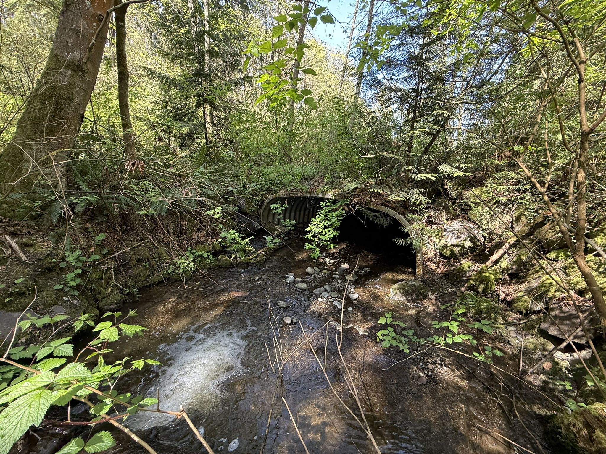

April Goals
Revise methods and results for r.phil MS
Finish first draft of intro/disc. for r.phil chapter
Get gametogenesis gene list for bivalve species of interest
Recap of March
I didn’t really (at all, actually) in March. Here’s generally what went down:
March 5-11 was at the Aquaculture 2025 conference. Was great to see what up and coming research is happening and was a good experience presenting my findings (and forced me to actually finish my findings….)
March 12 was my one day in town before leaving for a personal trip. Held extended office hours for any questions about the final lab project for 270. I was also asked a little bit ago by Luke if I could help out one of his undergrads who is starting a stable isotope project, just with some light training on tissue collection and sample prep stuff, so we had a little tissue collecting party in the fish collection this day as well.
March 13-23 was technically “out of town” – had a snowboarding/climb trip, but got rained out for the climbing part of it. Most of this week was finishing and finalizing lab grades for 270 to get them to jose before grades need to be submitted.
March 24 had a planning meeting with the 370 teaching team and trained some folks from SEAS on how to do salmon dissections for science fairs, classroom/lab visits, etc.
March 25-28. There was a personal emergency at home. I was largely indisposed, occupied, distracted, whatever you wish to call it. (Things are more or less OK now, slightly too soon to fully tell, but everyone is hangin in there). Found some time within the craziness to update the functional annotation sheet for all GO terms (not just the 16 BP-first listed ones) and do some lit review where needed on those, as well as add the methods and results to the shared M.S.
March 31 was first day of the quarter – had 370 lecture, 370 teaching team meeting, and 370 lab prep for the week (fin clipping and DNeasy kit prep).
April!
April 1
447 lecture & lab
There’s this researcher, Li Yixuan, from Hong Kong I’ve been emailing with who has a paper (hot off the press!) using ultraconserved elements (UCEs) to generate a bivalve phylogeny. It includes many species, but only 6 of the 16 I’m interested in. If I could get a fasta file for some of the UCEs used, I can generate my own phylogeny using the 16 species, which is key to trait mapping the gametogenesis genes for my ch.1. Had a meeting with Luke to discuss this, and we were able to work with Yixuan to get the files.
some light lit review for r.phil intro/discussion – Gurr 2022
April 2
370 lecture
office hours
additional lit review for r.phil – Xu et a. 2024 ,Zhao et al. 2020
met with Mac to go over needed revisions for results and methods in MS as well as next steps / key things in lit to look out for
April 3
447 lecture
emails
update lab notebook
lab meeting
370 lab one
maybe TGIT seminar ? we’ll see how I feel :P
April 4
370 lecture, lab prep & lab
emails
April 7
370 lecture & planning meeting
reviewed GRFP update slides sent out to fellows
brief meeting with luke about phylo stuff
bivalve gametogenesis (BG) stuff:
created repo on GH
pulled the cds files for all the refseq annotated genomes
made the blast DB for the GO term of interest – GO:007276 Gamete Generation. Next steps I want to find a way to loop the query file / actual blast steps now that I have a sub directory containing all my genomes (cds) of interest.

April 8
447 lecture and lab – lab went 1h45m over time…. BUT learned some pretty siic stuff about hydrology and estimating flood event probabilities.
April 9
370 lecture
office hours
April 10
447 lecture
370 lab prep & lab
April 11
370 lecture
addressed comments in clam MS
370 lab
April 14
370 lecture & planning meeting
some admin-type work (emails, mostly) and preparing handouts for 370 week 3 labs
April 15
447 lecture & field day – went to several spots along Taylor Creek – very fun and informative case study on the impacts of altering geomorphological processes and the journey towards restoring them.
Also updated my functional annotation sheet for clam stuff and revisited a couple of the comments / mac’s suggestions.
